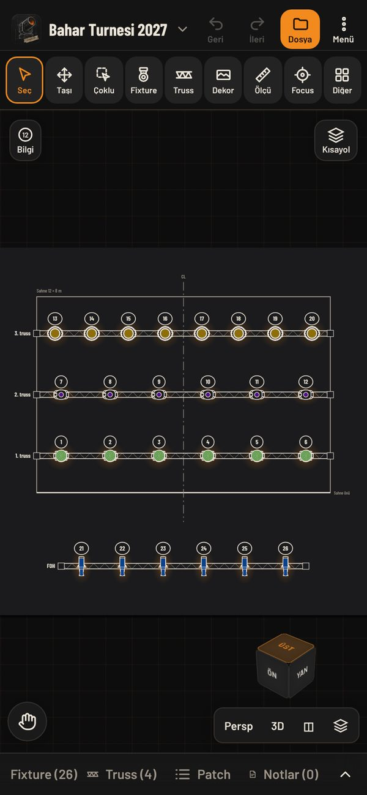
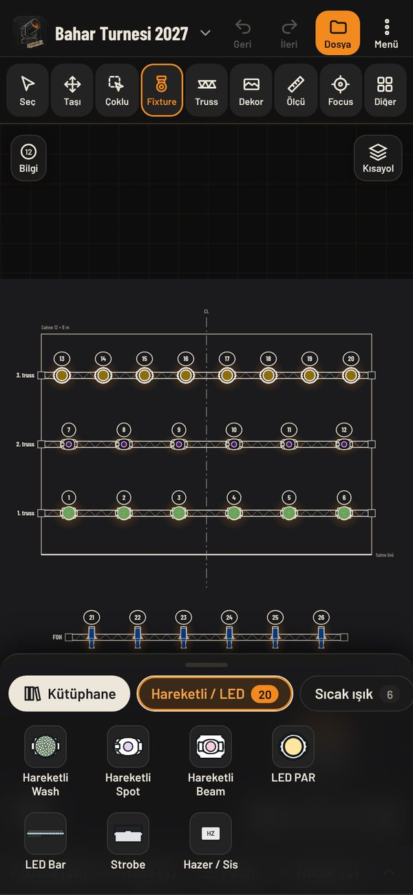
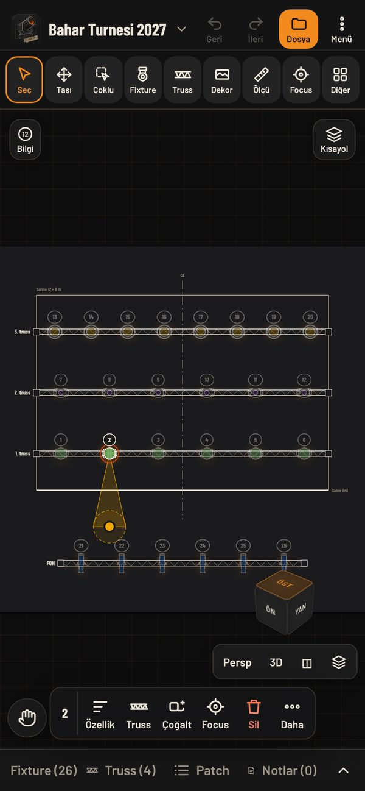

Kullanım kılavuzu
1 · Başlarken: ilk planın 5 adımda

- Yeni proje aç. Sağ üstteki turuncu Dosya › Yeni. Hazır sahnelerden birini seç (İtalyan, black box, arena, konser…), genişlik ve derinliği yaz, Yeni proje olarak aç.
- Proje bilgilerini yaz. Dosya › Proje bilgileri: gösteri adı, mekân, ışık tasarımı, tarih.
- Truss’ları kur. Hazır sahne truss’larla gelir. Kendin çizmek için araç çubuğunda Truss’a bas ve planda baştan sona sürükle.
- Fixture’ları yerleştir. Fixture’a bas, bir tip seç (ör. Hareketli Wash), truss’a dokun. Her dokunuş bir fixture koyar; konsol ch’i kendiliğinden verilir. Bitince Seç’e dön.
- Adresle ve çıktı al. Alt paneldeki Patch sekmesinden DMX adreslerini ver. Sonra Dosya › Rider PDF: ölçekli plan, malzeme, güç, patch ve filtre listesi tek dosyada.
2 · Ekran: çubuklar, plan ve alt panel
Telefonda ekran dört bölümdür:
- Üst çubuk. Solda logo ve proje adı (dokununca Proje paneli açılır), ortada Geri ve İleri (geri al / yinele), sağda turuncu Dosya ve ⋮ Menü (Ekran düzeni, Araç çubuğunu düzenle, Ayarlar, Yardım).
- Araç çubuğu. Seç, Taşı, Çoklu, Fixture, Truss, Dekor, Ölçü, Focus, Diğer. Açık olan araç turuncu çerçevelidir. Diğer alttan bir ızgara açar: Kaydır, Kilit, Yazı, Huzme, Katman. Planı kaydırınca ya da yakınlaştırınca araç çubuğu ince bir şeride iner, plan büyür; şeride (▾ Araçlar) dokununca yeniden açılır.
- Plan. Sol üstte Bilgi (fixture’ların yanındaki yazıları gizler / gösterir), sağ üstte Kısayol (kısayollar ve gruplar), sağ altta görünüm küpü ve altında 2D / Persp / 3D / ◫ / Katmanlar düğmeleri, sol altta el (kaydırma) düğmesi.
- Alt panel. Fixture, Truss, Patch ve Notlar sekmeleri. Sekmeye dokununca liste açılır, yeniden dokununca kapanır. Her listenin üstünde arama kutusu vardır.
Bir şey seçince planın altında seçim çubuğu çıkar (Bölüm 10). Bildirimler üstte kısa süre görünür; geri alınabilen işlemlerde yanında Geri al düğmesi olur.
Uzaklaştıkça planda yalnız ch numaraları kalır; yaklaştıkça adres, filtre ve gobo da görünür.
3 · Gezinme, Seç, Taşı ve Çoklu
Planda gezinme (telefon ve tablet)- Boş alanda tek parmak: planı kaydırır.
- İki parmak: kaydırır ve yakınlaştırır.
- Sol alttaki el düğmesi açıkken bir fixture’ın üstünden başlasan da plan kayar.
- Seç. Dokunduğun şey seçilir. Sürüklesen de hiçbir şey yerinden oynamaz; plan kayar. Boş yere dokununca seçim kalkar. Tek istisna seçili fixture’ın turuncu focus noktasıdır: onu Seç’te de sürükleyebilirsin (Bölüm 8).
- Taşı. Sürüklediğin fixture, truss, dekor, nesne ya da yazı taşınır. Boyut, açı ve ölçü ucu tutamakları da yalnız Taşı açıkken çalışır. İşin bitince Seç’e dön.
- Çoklu. Açıkken dokunduğun her şey seçime eklenir (yeniden dokununca çıkar) ve boş alanda tek parmakla sürükleyince çizdiğin alandaki her şey seçilir. Taşı ile birlikte kullanınca seçilenlerin hepsi birlikte taşınır.
Basılı tut: dokunduğun şeyin menüsünü açar (Bölüm 10).
Bilgisayar- Tekerlek: yakınlaştır. Sağ ya da orta tuşla sürükle: kaydır. Boş alanda sürükle: alan seç.
- Shift / Ctrl + tık: seçime ekle ya da çıkar. Çift tık: özellikler. Sağ tık: menü. Bilgisayar düzeninde sürükleyince doğrudan taşınır.
4 · Dosya menüsü, projeler ve mekânlar

Turuncu Dosya düğmesi dosyayla ilgili her şeyi toplar:
- Yeni: hazır sahne seçip yeni proje açar. Sahneler: İtalyan, stüdyo / black box, üç taraflı (thrust), arena, karşılıklı (traverse), konser, boş. Ölçüleri girersin; truss’lar, kulisler ve fon orantılı kurulur. Bu projeye uygula ile açık projenin sahnesini de değiştirebilirsin.
- Aç: telefondaki bir proje dosyasını (.loff ya da eski .json) ya da LampOff’un ürettiği PDF’i yeni proje olarak açar.
- Kaydet: projeyi .loff dosyası yapar. Ad sorulur; aynı adla dosya varsa üstüne yazılmaz, sonuna (1), (2) eklenir.
- Projelerim: telefondaki bütün projeler. Aç, kopyala, sil, yeni proje; altında Tüm projeleri yedekle ve Yedekten geri yükle.
- Proje bilgileri: gösteri adı, mekân, ışık tasarımı, tarih, revizyon, sahne genişliği ve derinliği.
Üstteki proje adına dokununca aynı Proje paneli açılır: Bilgiler, Projelerim, Mekânlar, Listeler.
MekânlarTurnede gittiğin salonu bir kez kur, Mekân olarak kaydet (sahne, truss’lar, dekor; istersen sabit ışık parkı). Sonra o mekâna dokununca salonu hazır yeni proje açılır. Mekân dosya olarak da paylaşılır.
Telefondaki LampOff klasörüUygulama telefonda Dosyalar › Documents › LampOff klasörünü oluşturur. Projeler klasöründe her projenin güncel kopyası (.loff), Dosyalar klasöründe dışa aktardığın her şey durur. Telefon değiştirirken ya da uygulamayı silmeden önce bu klasörü yedekle; yeni telefonda dosyaları Dosya › Aç ile açarsın.
5 · Truss ve tower
- Truss çiz. Araç çubuğunda Truss › planda baştan sona sürükle. Yatay sürüklersen truss, dikey sürüklersen tower olur. Bitince Bitir.
- Truss kütüphanesi. Truss aracı açıkken alttaki listede: Truss / boru, Tower / yan boru, Dik tower (yukarı), Boom (yerden ayak), Çember truss, Ground support, Çoklu truss (adet ve aralıkla tek seferde), Truss’ları kilitle.
- Ayarlar. Truss’a dokun › seçim çubuğunda Özellik: ad, uzunluk, yön, sahne önünden uzaklık, açı, yükseklik (trim), tip (Truss ya da Boru), profil ve genişlik.
- Açı. Ayarlardaki kaydırıcıyla ya da sayı yazarak (ör. 12,5°). Taşı açıkken seçili truss’ın ucundaki tutamacı sürükleyerek de çevrilir. Üzerindeki fixture’lar truss’la birlikte döner.
- Taşıma. Taşı aracıyla sürükle; üzerindeki fixture’lar onunla gider.
- Çember truss. Çap, segment sayısı ve yükseklik verilir; dik ya da eğik de durabilir.
Truss’a basılı tut: Fixture ekle › (bu truss’a ekle, truss’ı N fixture’la doldur, yapıştır) · Üzerindekiler › (eşit dağıt, seç, bir tipi seç) · Truss › (fixture’larıyla kopyala, buradan ikiye böl) · Kilitle · Sil.
6 · Dik tower ve yükseklikler
Plan üstten bakıştır: x sağ-sol, y derinlik. Yükseklik (z) önden ve yandan görünüşte görülür ve değiştirilir (görünüm küpünün ÖN ya da YAN yüzüne dokun).
- Taşı açıkken truss’ı yukarı-aşağı sürükle: yüksekliği (trim) değişir. Sağa-sola sürükle: önden görünüşte x, yandan görünüşte derinlik değişir.
- Truss’ta olmayan (yerde, standda, dik tower’da) fixture’ı yukarı-aşağı sürükleyince yüksekliği değişir.
- Sayıyla vermek için: truss’ın özelliklerinde Yükseklik / trim, fixture’ın özelliklerinde Yükseklik (m).
- Truss › Dik tower (yukarı). Tower sahnenin yanına eklenir; Taşı ile yerine götür.
- Özelliklerinden Yükseklik’i yaz, Tower’a fixture as…: adet, en alttaki yükseklik, aralık ve fixture.
- Önden görünüşte fixture’ları yukarı-aşağı sürükleyerek tam yerine getir.
Planda aynı tower’daki fixture’lar üst üste düşeceği için tower’ın yanında bir kutuda, yükseklik sırasıyla gösterilir.
7 · Fixture ekleme ve kütüphane

- Fixture’a bas. Altta palet açılır: gruplar (Hareketli / LED, Sıcak ışık, Diğer, Özel semboller) ve o gruptaki tipler.
- Bir tipe dokun, sonra planda truss’a ya da boş yere dokun. Art arda dokunarak çoğaltırsın. Bitince Seç.
- Truss’a yakın bırakılan fixture truss’a oturur. Truss doluysa “yer dar” uyarısı çıkar; truss’a basılı tut › Üzerindekiler › Eşit dağıt.
- Paletteki sembol, planda çizilecek sembolün aynısıdır.
Paletteki Kütüphane düğmesi: binlerce gerçek model, internetsiz. Marka ya da model ara, Yerleştir’e bas, plana dokun. Model; modları, ch sayısı, gücü, ağırlığı ve gerçek ölçüsüyle gelir. Listede olmayan model için Kendi fixture’ını ekle; GDTF, Open Fixture Library (.json) ve QLC+ (.qxf) dosyası da yüklenir.
Hızlı yollar- Truss’ı doldur: truss’a basılı tut › Fixture ekle › Truss’ı doldur… › adet ve fixture. Eşit aralıkla dizilir.
- Kısayollar: sık kullandığın fixture ve truss’ları sağ üstteki Kısayol düğmesine ekle (özelliklerde “Kısayola ekle”). Kısayola dokun, sonra plana dokun.
- Önden / yandan görünüşte ekleme: paletten fixture seç, tower’a ya da truss’a dokun; dokunduğun yüksekliğe asılır.
8 · Fixture’ın özellikleri ve focus noktası
Fixture’a dokun › seçim çubuğunda Özellik (ya da basılı tut › Özellikler). Birden çok fixture seçiliyse değişiklik hepsine uygulanır.
- Model ve mod: kütüphaneden model ata, modunu seç; ch sayısı ve ch haritası gelir.
- Kimlik ve ch: sembol tipi, konsol ch’i (fixture’ın numarası budur), güç (W), ağırlık (kg), aksesuar.
- DMX: universe ve adres. Sıcak ışıklarda dimmer’ın DMX adresi (1 ch).
- Renk filtresi (Lee / Rosco kodu, ör. L201), gobo, sembol rengi, amaç, not.
- Yükseklik (m): truss’ta olmayan fixture’lar için.
- Fotometri: atış mesafesi, focus’taki huzme çapı ve yaklaşık lux.
Değeri yazdıktan sonra alttaki Tamam’a bas.
Turuncu focus noktasıFixture’ı seçince huzmesi ve ucunda turuncu bir nokta görünür. Noktayı sürükle: fixture oraya döner. Yeri değişmez; yalnız baktığı yer değişir. Çok fixture’ı aynı yere çevirmek için: seç › seçim çubuğunda Focus › plana bir kez dokun.
9 · Konsol ch’i ve DMX adresi
- Konsol ch’i kendiliğinden gelir. Eklediğin, çoğalttığın ya da yapıştırdığın her fixture’a kullanılmayan bir sonraki ch verilir; aynı ch iki fixture’a verilmez. Fixture’ın planda görünen numarası bu ch’tir.
- Sırayla ch ver. Fixture’ları seç › basılı tut › Hızlı ayar › Konsol ch’i ver… › başlangıç (ör. 101). Soldan sağa 101, 102, 103… olur.
- Sırayla adres ver. Aynı menüde DMX adresi ver…: universe ve başlangıç adresi; adresler her fixture’ın ch sayısı kadar artar.
- Otomatik patch ve DMX haritası: Patch listesinde (Bölüm 17).
10 · Seçim çubuğu ve basılı tut menüsü

Bir şey seçince planın altında çıkar:
- Tek fixture: Özellik, Truss (asılı olduğu truss’ı seçer), Çoğalt, Focus, Sil, Daha (kopyala, döndür, kilitle, kısayola ekle…).
- Birden çok fixture: kaç tane seçili olduğu, Düzenle, Çoğalt, Focus, Sil, Daha.
- Fixture: Özellikler · Düzenle › (kopyala, çoğalt, yapıştır, 90° döndür, aynala, hizala ve dağıt, gizle) · Model ve tip › · Hızlı ayar › (ch, DMX, filtre, gobo, not) · Seç › (aynı tip, aynı model, bu truss’takiler) · Grup › · Kilitle · Sil.
- Truss: Ayarlar · Fixture ekle › · Üzerindekiler › · Truss › · Kilitle · Sil.
- Boş alan: Ekle › (fixture, truss, tower, yazı, dekor, yapıştır) · Araçlar › · Görünüm › · Katmanlar › · Seçim ›.
Aynala seçilenleri merkez çizgisinin karşı tarafına kopyalar. Yanlış bir şey yaptıysan üstteki Geri.
11 · Kilitleme
Seç modunda zaten hiçbir şey taşınmaz. Kilit, Taşı açıkken bile yerinden oynamaması gereken şeyler içindir.
- Diğer › Kilit: üstte “Kilitleme modu” çıkar. Dokunduğun her fixture, truss, dekor, yazı ve ölçü kilitlenir. Üstteki şeritten Kilit aç’a geçersin. Çıkmak için düğmeye yeniden bas.
- Kilitli fixture taşınmaz ama seçilir, özellikleri değişir, focuslanır. Planda küçük kilit simgesiyle görünür.
- Truss aracındaki Truss’ları kilitle bütün truss’ları tek seferde sabitler.
- Bütün kilitleri açmak için: boş alanda basılı tut › Seçim › Bütün kilitleri aç.
12 · Dekor, oyuncular ve nesneler

Araç çubuğunda Dekor. Alttaki listeden seç, plana dokun ya da sürükle:
- Hazır sahne ve Sahne ölçüsü.
- Dekor / platform: köşeden köşeye sürükle. Daire: merkezden kenara. Çizgi: perde, duvar.
- Kulis seti ve Fon perdesi: sağlı sollu eşit aralıklı kulisler.
- Erkek oyuncu, Kadın oyuncu: dokunduğun yere konur. Adını yaz, rengini seç, baktığı yönü çevir.
- Oturan oyuncu: önce sandalyeyi koy, sonra oturan oyuncuyu sandalyenin üstüne taşı ve aynı yöne çevir. Özelliklerindeki Oturma yüksekliği: sandalye 0,48 · koltuk 0,46 · bar taburesi 0,81 m. Ayaktaki oyuncuyu da özelliklerinden Duruş: Oturan yapabilirsin.
- Nesne kütüphanesi: Sahne (kapı, praktikabl, merdiven, bank, çit, varil…), Doğa (ağaç, çam, palmiye, çalı, çiçek, kaya), Müzik (davul, piyano, amfi, monitör, PA…), Etkinlik (gala masası, kürsü, bariyer, roll-up, sandalye sırası…), Teknik (LED ekran, perde, kamera, flight case…), Mobilya (masa, sandalye, koltuk, kanepe…).
Nesneler önden, yandan, perspektif ve 3D’de gerçek yükseklikleriyle görünür. Her parçaya etiket, renk ve yükseklik verilir.
Kendi nesnen: parçaları dikdörtgen, daire ve çizgiyle çiz; her birine yükseklik ve gerekirse “yerden” değeri ver; hepsini seç › Nesne kütüphanesine kaydet.
13 · Ölçü ve yazı
- Ölçü: iki noktaya ya da iki fixture’a dokun (ya da birinden diğerine sürükle); mesafe yazar. Ucu fixture’a bağlı ölçü, fixture taşınınca kendiliğinden güncellenir.
- Zincir: nokta nokta kablo yolu çiz; toplam uzunluk ve kablo payı (%) hesaplanır.
- Elle değer: bir yeri ölçeksiz çizdiysen ölçüyü seç › “Gerçek ölçüyü kullanma, değeri kendim yazacağım” › metrajı yaz. Planda ve PDF’te senin yazdığın görünür.
- Yazı: Diğer › Yazı › plana dokun. Metni özelliklerinden değiştir; Taşı açıkken köşedeki kareyle büyüt.
14 · Görünüşler: küp, önden, yandan, perspektif
Sağ alttaki görünüm küpü hangi yönden baktığını gösterir. Bir yüzüne dokun: ÜST = plan, ÖN = önden (seyirciden), YAN = yandan. Küpü sürükleyerek de döndürebilirsin.
Küpün altında: 2D (plana dön), Persp (perspektif çizim), 3D (canlı 3D sahne), ◫ (bölünmüş ekran), Katmanlar.
- Önden / yandan: fixture’lar plandaki sembolleriyle, yükseklikleriyle görünür. Taşı açıkken yer ve yükseklik sürükleyerek değişir (Bölüm 6).
- Perspektif: truss’lar kafes, fixture’lar sembolleriyle çizilir. Boşlukta sürükleyince görüntü döner. Rider PDF’e perspektif sayfası olarak girebilir.
- ◫ Bölünmüş ekran: üstte planı düzenlerken altta 3D ya da önden görünüş canlı güncellenir. Aradaki çizgiyi sürükleyerek oranı değiştirirsin.
15 · 3D sahne

Küpün altındaki 3D. Plana dönmek için 2D.
- Gezinme: tek parmakla sürükle = kamerayı döndür. İki parmak = kaydır ve yakınlaştır. Bir nesneye çift dokununca kamera ona yaklaşır.
- Huzme: hangi huzmeler yansın. Seçililerin huzmesi · Hepsi yanar, seçilen solo · Bütün huzmeler · Huzme yok.
- Ortam: Salon ışığı (Karanlık, Gösteri, Çalışma), Haze yoğunluğu, Sahne zemini (ahşap, siyah marley, gri), Zemin yüzeyi (mat, parlak), Görüntü ayarları (gerçek aydınlatma, gölgeler, parlama, hareketli duman, Pan / Tilt etiketleri), Görüntü kalitesi (Hızlı / Kaliteli), Oyuncu figürü ekle.
- Kontrol: joystick paneli (Bölüm 16).
- Kamera: hazır bakış noktaları (Salon ortası, Sahneden salona, Çapraz, Tepeden, Sol ve Sağ yandan), Bu görünümü kaydet, ortografik kamera, Görseli kaydet (yüksek çözünürlük).
- Sunum: bütün düğmeler gizlenir, temiz tam ekran görüntü kalır. Sağ üstten görsel kaydedilir ya da çıkılır.
Truss yüksekliği eksikse çubukta ⚠ çıkar; dokununca hangisi olduğunu söyler.
Telefon zorlanıyorsaKamera dönerken görüntü kısa süre yumuşar, durunca netleşir; bu hız içindir. “3D bu telefonda ağır çalışıyor” bildirimi çıkarsa Hızlı moda geç’e dokun ya da Ortam › Görüntü kalitesi › Hızlı. Hareketli dumanı ve gölgeleri kapatmak da hızlandırır.
16 · 3D’de Kontrol: seçme, joystick, Dim, renk ve gobo

- Kontrol açıkken her fixture’ın üstünde ch balonu çıkar. Balona dokun: o fixture seçilir, balon turuncu olur. Uzaktan bakarken üst üste binen balonlar gizlenir; yaklaşınca hepsi görünür.
- Panelde numaranın iki yanındaki ‹ ›: ch sırasıyla önceki / sonraki fixture.
- Fixture’ın gövdesine, yakınına ya da zemindeki ışık lekesine dokunmak da seçer. Çoklu açıkken dokunduklarının hepsi seçilir.
- Joystick: ittiğin yöne seçili fixture’lar döner, bırakınca durur. Pan −270…270°, tilt −135…135°. Panelde P ve T değerleri yazar.
- İnce: küçük, hassas hareket. ⟲: fixture’ı yeniden aşağı baktırır.
- ◎ Topla: bas, sonra 3D’de bir noktaya (sahne, perde, dekor) dokun; seçili fixture’ların hepsi oraya yönelir.
- Dim çubuğu (sağda): yukarı-aşağı sürükle. Üstünde yüzde yazar; altındaki düğme fixture’ı söndürür / yakar.
- Paneli sol üstteki noktalardan tutup taşıyabilirsin; × kapatır.
Renk / Gobo’ya basınca panel genişler: renk şeridi, gobo şeridi (yana kaydır), Zoom ve Focus kaydırıcıları, Frost, Prizma ve renk kodu kutusu (L201 ya da #FF8800 yaz › Uygula). Dokunduğun anında uygulanır.
- Panel açılınca sahne panelin üstünde kalan alana kayar; verdiğin gobo zeminde görünür.
- Sağ üstteki göz’e basılı tut: panel saydamlaşır, bırakınca geri gelir.
17 · Patch listesi ve DMX haritası
Alt panel › Patch sekmesi her fixture’ı adresiyle sıralar. En üstteki Tam patch listesi büyük pencereyi açar.
- Her satır bir fixture: konsol ch’i, sembol, model ve mod, universe, adres, adres aralığı, durum.
- Durum: yeşil ✓ tamam · kırmızı ! adres çakışıyor · sarı ⚠ adres yok.
- Filtreler: Tümü, DMX, Dimmer, Adressiz, Çakışan, Patch yapılacak. Arama kutusu ch, model ve adreste arar.
- Satıra dokun: ch, universe ve adres orada düzenlenir. Planda göster fixture’ı planda bulur.
- Seçim: satır başındaki kutu. Seçili bir satıra adres yazınca öteki seçililer sırayla onu izler; 512’yi aşan sonraki universe’e geçer. Unpatch seçililerin adresini siler.
- Otomatik patch: fixture’ları seç, universe ve başlangıç adresini yaz. Dolu adresler atlanır. İçindeki küçük haritada turuncu önizleme nereye oturacaklarını gösterir; haritada bir kutuya dokununca başlangıç oraya gelir.
- DMX haritası: 512 kutuluk universe görünümü. Adressiz fixture’ları alttan seç, haritada boş bir ch’e dokun, Patch at.
- Gruplar: Kısayol › Gruplar’da yaptığın gruplar listenin üstünde çıkar; gruba dokunup topluca adres verirsin.
- CSV: listeyi Excel’de açılacak dosya olarak verir.
18 · Focus modu (sahnede focus günü)
Araç çubuğunda Focus. Altta focus çubuğu açılır: kaç fixture’ın focuslandığı (ör. 2 / 33), Başla / Sıradaki, Liste, Patch, Yeşil, Sıfırla, ×.
- Bir fixture’a dokun (ya da Başla): focus kutusu açılır. ◀ ▶ ile sıradakine geçilir; plan o fixture’a kayar.
- Focuslandı: fixture planda yeşil işaretlenir. Yanlış bastıysan yeniden bas.
- Değişen patch: sahada plandakinden farklı dimmer ya da adrese takıldıysa yaz; planda kırmızı “→ D45” görünür.
- Not: “bıçakları daralt” gibi focus notu. Renk noktaları sembolü işaretler.
- Liste: focus sayfası; focuslananlar ve değişen patch’ler tek yerde, PDF olarak alınır.
- Patch: patch yapılacaklar listesi (sahada farklı takılanlar).
Bu işaretler geçicidir; plan ve patch kayıtların değişmez. Gösteri bitince Sıfırla.
Bir noktaya çevir: fixture’ları seç › seçim çubuğunda Focus › plana bir kez dokun; hepsi o noktaya döner. 3D’de aynısı için Kontrol › ◎ Topla.
19 · Dışa aktar: Rider PDF ve diğer çıktılar
Dosya › Dışa aktar:
- Rider PDF: ölçekli plan (en uygun ölçek kendiliğinden), semboller ve malzeme listesi, toplam güç ve faz başına amper, truss ölçüleri, ch / patch listesi, filtre kesim listesi, notlar; istersen önden, yandan ve perspektif sayfaları. Kâğıt A4 / A3 / A2. Önizlemede sayfaya dokun: tam ekran açılır, iki parmakla yakınlaştırılır, ◀ ▶ ile sayfa değişir. Bu PDF LampOff’ta yeniden açılabilir.
- Plan (PDF): tek sayfa çizim. Plan (resim): WhatsApp ve e-posta için PNG.
- Patch listesi (Excel): CSV. Patch yapılacaklar (PDF): sahada farklı takılanlar.
- Konsol ve çizim programları: MVR (grandMA3, ETC Eos Augment3d, Vectorworks, Capture), grandMA2 patch (XML), Konsol patch (USITT ASCII), SVG çizim.
- Dosyalarım: dışa aktardığın son dosyalar; buradan yeniden paylaşır ya da indirirsin.
Her dışa aktarmada dosya adı sorulur. Dosya hazır olunca İndir ya da Paylaş çıkar; bir kopyası telefondaki LampOff › Dosyalar klasörüne de yazılır.
Profesyonel listeler (proje adı › Listeler)Konum listesi (konum, ch, fixture, amaç, adres, filtre, gobo, atış, huzme çapı), Magic sheet ve Truss ölçüleri ve yükler (truss başına yaklaşık kg ve güç).
RevizyonlarProje bilgileri › Bu hâli kaydet o anki planı revizyon olarak saklar. Karşılaştır ya da Dosyayla karşılaştır… yer, ch, adres, filtre, gobo, focus ve truss farklarını listeler; Değişenleri planda seç hepsini seçer.
20 · İçe aktarma
Dosya › Başka programdan içe aktar:
- PDF plan: başka programda çizilmiş ışık planı. Sayfayı ve alanı seçersin; semboller tanınır, truss’lar ve notlar çıkarılır; eşleşmeleri onaylarsın.
- DXF (AutoCAD vb.): mekânın çizimi planın altına altlık olarak gelir. Katmanları seç, bir bölümünü al. Proje › Altlık’tan döndür, kaydır, Bir noktayla hizala. DWG için önce DXF olarak kaydet.
- 3D model (SketchUp’tan DAE / OBJ / STL ya da GLB): model yatay kesilir, kesitler altlık olur.
- MVR: yeni proje olarak açar ya da projene ekler; truss’lar fixture konumlarından oluşur, içindeki GDTF dosyaları kütüphanene eklenir.
- CSV (konsoldan, Lightwright’tan, Excel’den): plandaki fixture’ların ch, adres, dimmer, amaç ve filtrelerini toplu günceller ya da yeni fixture ekler.
- USITT ASCII: konsol ch’lerine göre adresleri günceller.
LampOff proje dosyaları (.loff, eski .json) ve mekân dosyaları için Dosya › Aç.
21 · Ekran düzeni ve Benim düzenim
⋮ › Ekran düzeni. Değişiklik hemen uygulanır; Varsayılana dön eski hâline getirir.
- Araç çubuğu: üstte ya da altta. Görünüm seçici: küp ya da sekmeler; altta, üstte ya da gizli. Yakınlaştırma kutusu: solda, sağda, gizli. Alt panel: göster / gizle. Düğme boyutu: normal / büyük.
- ⋮ › Araç çubuğunu düzenle: hangi düğmeler görünsün, hangi sırayla (✓ ile ekle / çıkar, oklarla sırala).
Kendi çalışma ekranın. Açınca araç çubuğu kalkar, planın üstünde yüzen kutular çıkar. Düzenimi düzenle ile kutuları sürükle; her kutuda ✎ (içindeki düğmeler), ⇄ (yatay / dikey), ✕ (sil); üstte + Kutu ekle ve Bitti. Seçim çubuğunun, yakınlaştırmanın ve küpün yerini de buradan belirlersin. Orijinal ekran olduğu gibi kalır; ikisi arasında ⋮ menüsünden geçersin.
22 · Katmanlar, kısayollar ve gruplar
KatmanlarKüpün altındaki katman düğmesi (ya da Diğer › Katman). Göz gizler / gösterir, kilit kilitler / açar.
- Hazır katmanlar: truss ve tower’lar, fixture’lar, dekor ve kulis, oyuncular, yazılar, ölçüler, truss ölçü zinciri.
- Kilitli katmandaki nesneler seçilemez ve taşınamaz. Gizli katmanlar PDF ve PNG çıktısına girmez.
- Kendi katmanların: fixture’ları seç › Katmana ata › yeni katman (ör. “Ön ışıklar”, “2. perde”).
Sağ üstteki Kısayol düğmesinde iki sekme var:
- Kısayollar: sık kullandığın fixture ve truss’lar. Özelliklerde “Kısayola ekle”. Kısayola dokun, sonra plana dokun.
- Gruplar: seçtiğin fixture’lara ad ve renk vererek grup yap. Gruba dokununca içindekiler seçilir; Patch listesinde de grup olarak adres verirsin. Basılı tut › Grup ile gruba ekler ya da çıkarırsın.
23 · Ayarlar ve yedekleme
⋮ › Ayarlar:
- Dil: Türkçe / English.
- Tema: LampOff (teknik çizim), telefona göre, açık, koyu. Sade ekran ipuçlarını gizler. Planı kaydırınca araç sırası küçülsün işaretini kaldırırsan araç çubuğu hep açık kalır.
- Plan (bu proje): fixture sembolleri (fixture’a özel gerçek ölçü ya da klasik), 1 m ızgara, truss ölçüleri, konsol ch’leri, fixture’ların yanında yazanlar (DMX adresi, renk filtresi, gobo, not), bütün huzmeler.
- 3D görünüm: kalite (Yüksek / Hızlı), ortam ışığı, haze, gerçek aydınlatma.
- Yeni proje varsayılanları: sahne genişliği, derinliği ve ışık tasarımı adı.
- Kütüphane: kaç fixture yüklü olduğu ve Kütüphaneyi aç.
- Projeler telefonda saklanır; hesap ya da internet gerekmez.
- Her projenin güncel kopyası Dosyalar › Documents › LampOff › Projeler klasöründe de durur.
- Hepsini tek dosyada almak için: Dosya › Projelerim › Tüm projeleri yedekle. Geri almak için Yedekten geri yükle.
Yeni sürüm Google Play ya da App Store üzerinden gelir. Sürüm numarası Ayarlar’ın en altında ve bu pencerenin altında yazar.
24 · Sık sorulanlar
- Sürüklüyorum ama fixture taşınmıyor. Seç modundasın. Araç çubuğunda Taşı’ya bas, sonra sürükle.
- Planı nasıl kaydırırım? Boş alanda tek parmakla sürükle; iki parmakla yakınlaştır.
- Birden çok fixture’ı nasıl seçerim? Çoklu’ya bas; dokunduklarının hepsi seçilir, boş alanda sürükleyince alan seçilir.
- Planlarım nerede? Telefonun içinde ve Dosyalar › Documents › LampOff › Projeler klasöründe.
- Bir şeyi yanlışlıkla sildim. Üstteki Geri.
- Fixture truss’a oturmuyor. Truss’a daha yakın dokun ya da truss’a basılı tut › Fixture ekle.
- 3D’de fixture’lar yanlış yükseklikte. Truss yüksekliklerini gir ya da önden görünüşte Taşı ile truss’ı yukarı-aşağı sürükle.
- 3D’de fixture seçemiyorum. Kontrol’ü aç; fixture’ların üstündeki ch balonlarına dokun ya da panelde ‹ › kullan.
- 3D kasıyor. Ortam › Görüntü kalitesi › Hızlı; hareketli dumanı ve gölgeleri kapat.
- Gobo verirken sahneyi göremiyorum. Paneldeki göz düğmesine basılı tut; panel saydamlaşır.
- Ekran çok kalabalık. ⋮ › Ekran düzeni’nden alt paneli gizle, araç çubuğunu düzenle ya da Benim düzenim’i kur.
25 · Sözlük: A’dan Z’ye
- Adres (DMX)
- Fixture’ın universe’teki başlangıç ch’i (1–512).
- Alt panel
- En alttaki Fixture / Truss / Patch / Notlar listeleri.
- Aynala
- Seçilenleri merkez çizgisinin karşı tarafına kopyalar.
- Benim düzenim
- Yüzen kutulardan oluşan kendi çalışma ekranın.
- Bölünmüş ekran (◫)
- Üstte plan, altta 3D ya da önden görünüş birlikte.
- Ch balonu
- 3D’de Kontrol açıkken fixture’ın üstünde çıkan, dokununca seçen numara.
- Çakışma
- İki fixture’ın DMX adres aralığının üst üste binmesi; Patch listesinde kırmızı.
- Çoklu
- Dokunduklarını seçime ekleyen ve alan seçtiren araç.
- Değişen patch
- Sahada plandakinden farklı takılan dimmer / adres; geçici not.
- Dik tower
- Yerden yukarı duran truss; planda kare, önden görünüşte tam boy.
- Dimmer
- Sıcak ışıkların bağlandığı devre; DMX’te 1 ch.
- Dosya
- Üstteki turuncu düğme: yeni, aç, kaydet, projeler, dışa ve içe aktarma.
- Filtre
- Lee / Rosco renk filtresi kodu; filtre kesim listesine girer.
- Focus noktası
- Seçili fixture’ın huzmesinin ucundaki turuncu nokta; sürükleyince fixture oraya döner.
- Görünüm küpü
- Sağ alttaki küp; yüzüne dokununca o görünüşe geçer.
- Haze
- 3D’de huzmeleri görünür yapan duman yoğunluğu.
- Huzme
- Işığın sahneye düşen konisi.
- Katman
- Nesne grubunu birlikte gizleyip kilitlemek için.
- Konsol ch’i
- Fixture’ın konsoldaki numarası; planda fixture’ın numarası da budur.
- LampOff klasörü
- Telefonda Dosyalar › Documents › LampOff: projelerin ve dışa aktardıklarının kopyası.
- .loff
- LampOff proje dosyası.
- Mekân
- Kaydedilmiş salon (sahne, truss’lar, dekor); yeni projeyi hazır açar.
- MVR
- Konsol ve görselleştirme programlarının ortak sahne dosyası.
- Otomatik patch
- Seçili fixture’lara verdiğin universe ve başlangıç adresinden sırayla adres verir.
- Patch listesi
- Bütün fixture’ların ch ve adres listesi.
- Rider
- Plan, malzeme ve listelerden oluşan teknik belge (PDF).
- Seç
- Dokununca seçen, hiçbir şeyi taşımayan varsayılan araç.
- Seçim çubuğu
- Seçim yapınca altta çıkan Özellik / Truss / Çoğalt / Focus / Sil / Daha.
- Taşı
- Sürüklediğini taşıyan araç.
- Topla (◎)
- 3D’de seçili fixture’ları dokunduğun noktaya çevirir.
- Trim
- Truss’ın yerden yüksekliği.
- Truss
- Fixture’ların asıldığı kafes ya da boru; açı ve yükseklik verilebilir.
- Universe
- 512 ch’lik DMX hattı.